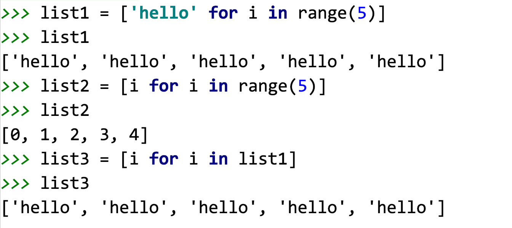

x
list1 = [1, 2, 3]for i in list1: print(i) for i in range(n): # 循环几次,n 就是几 pass补充: 列表推导式: 快速的生成列表变量名 = [生成数据的规则 for 变量 in xxx] # 循环每执行一次, 在列表中添加一个数据list1 = []for i in range(5): list1.append(i) range(start, end, step)range(1, 10) # 1 2 3 4 5 6 7 8 9range(1, 10, 1) # 1 2 3 4 5 6 7 8 9range(1, 10, 2) # 1 3 5 7 9range(1, 10, 3) # 1 4 7range(1, 10, 5) # 1 6
x
find() 找到了返回的是下标(肯定不是-1)没有找到 返回是-1
xxxxxxxxxx变量 = [数据, 数据, ...]x
列表.append(数据)xxxxxxxxxx列表.index(数据)(如果数据不存在,会报错)列表.count(数据)x
想要修改列中的指定下标位置的数据, 使用的语法是:列表[下标] = 数据# 字符串中字符不能使用下标修改xxxxxxxxxx# 定义列表my_list = [1, 3, 5, 7]# 1. 想要将下标为 1 的数据修改为 22my_list[1] = 22print(my_list) # [1, 22, 5, 7]# 修改最后一个位置的数据, 改为 'hello'my_list[-1] = 'hello'print(my_list) # [1, 22, 5, 'hello']# 2. 如果指定的下标不存在, 会报错的# my_list[10] = 10 # 代码会报错xxxxxxxxxx在列表中删除中间的数据, 那么后面的数据会向前移动根据下标删除
x
列表.pop(下标) # 删除指定下标位置对应的数据1. 下标不写,默认删除最后一个数据(常用)2. 书写存在的下标, 删除对应下标位置的数据返回: 返回的删除的数据根据数据值删除
xxxxxxxxxx列表.remove(数据值) # 根据数据值删除返回: None注意: 如果要删除的数据不存在, 会报错清空数据(一般不用)
xxxxxxxxxx列表.clear()xxxxxxxxxxmy_list = [1, 3, 5, 7, 9, 2, 4, 6, 8, 0]# 1. 删除最后一个位置的数据num = my_list.pop()print('删除的数据为:', num)print(my_list) # [1, 3, 5, 7, 9, 2, 4, 6, 8]# 2. 删除下标为 1 的数据 3my_list.pop(1)print(my_list) # [1, 5, 7, 9, 2, 4, 6, 8]# 3. 删除数据为 7 的数据my_list.remove(7) # 注意, 如果列表中有多个 7, 只能删除第一个, 如果数据不存在,会报错的print(my_list) # [1, 5, 9, 2, 4, 6, 8]# my_list.remove(7) # 会报错的# 清空my_list.clear()print(my_list) # []xxxxxxxxxx字符串中 反转倒置: 字符串[::-1]列表中 反转和倒置: 1. 列表[::-1] # 使用切片的方法,会得到一个新列表, 原列表不会发生改变2. 列表.reverse() # 直接修改原列表, 返回 Nonexxxxxxxxxxmy_list = [1, 3, 5, 7, 9, 2, 4, 6, 8, 0]# 使用切片的方法反转, 会得到一个新列表list1 = my_list[::-1]print('my_list:', my_list)print('list1 :', list1)# 使用 reverse 方法, 直接修改原列表my_list.reverse()print('my_list:', my_list)
x
将列表中的数据复制一份,给到一个新的列表# 使用场景: 有一个列表, 需要修改操作列表中的数据, 修改之后, 需要和原数据进行对比,即原数据不能改1. 使用切片变量 = 列表[:]2. 使用 copy 方法变量 = 列表.copy()xxxxxxxxxxmy_list = [1, 2, 3]my_list1 = my_list[:]print('my_list :', my_list)print('my_list1:', my_list1)my_list1[1] = 22print('my_list :', my_list)print('my_list1:', my_list1)print('-' * 30)my_list2 = my_list.copy()print('my_list :', my_list)print('my_list2:', my_list2)my_list2[2] = 33print('my_list :', my_list)print('my_list2:', my_list2)print('=' * 30)my_list3 = my_list # 这是同一个列表,多了一个名字, 引用print('my_list :', my_list)print('my_list3:', my_list3)my_list3[0] = 11print('my_list :', my_list)print('my_list3:', my_list3)
x
列表的排序, 一般来说都是对数字进行排序的列表.sort() # 按照升序排序, 从小到大列表.sort(reverse=True) # 降序排序, 从大到小x
my_list = [1, 3, 5, 7, 9, 2, 4, 6, 8, 0]# 升序排序my_list.sort()print(my_list)# 降序排序my_list.sort(reverse=True)print(my_list)xxxxxxxxxx列表嵌套, 列表中的内容还是列表使用下标来确定获取的是什么类型的数据,然后确定可以继续进行什么操作x
person_info = [["张三", "18", "功能测试"], ["李四", "20", "自动化测试"]]print(len(person_info)) # 2print(person_info[0]) # ['张三', '18', '功能测试']print(person_info[0][0]) # '张三'print(person_info[0][0][0]) # 张# 将 18 改为 19person_info[0][1] = '19'print(person_info) # [['张三', '19', '功能测试'], ['李四', '20', '自动化测试']]# 给 李四 所在的列表添加一个性别 信息person_info[1].append('男')print(person_info) # [['张三', '19', '功能测试'], ['李四', '20', '自动化测试', '男']]# 将张三的年龄信息删除# person_info[0].pop(1)person_info[0].remove('19')print(person_info) # [['张三', '功能测试'], ['李四', '20', '自动化测试', '男']]
x
元组: tuple, 元组的特点和列表非常相似1. 元组中可以存放任意类型的数据2. 元组中可以存放任意多个数据区别:1. 元组中的数据内容不能改变, 列表中的可以改变的2. 元组使用 (), 列表 使用 [] 应用: 在函数的传参或者返回值中使用, 保证数据不会被修改xxxxxxxxxx1. 使用 类实例化的方式2. 直接使用 () 方式x
由于元组中的数据不能修改,所以只有查看的方法1. 在元组中也可以使用 下标和切片获取数据2. 在元组中存在 index 方法, 查找下标, 如果不存在,会报错3. 在元组中存在 count 方法, 统计数据出现的次数4. 在元组中可以使用 in 操作, 判断数据是否存在5. len() 统计个数以上方法的使用 和列表中一样的x
# 1, 类实例化的方式# 1.1 定义空元祖(不会使用的)my_tuple1 = tuple()print(type(my_tuple1), my_tuple1) # <class 'tuple'> ()# 1.2 类型转换# 可以将列表转换为元组, 只需要将 [], 变为 (), 同时 可以将元组转换列表 , 将() 变为 []my_tuple2 = tuple([1, 2, 3])print(my_tuple2) # (1, 2, 3)# 转换字符串, 和列表中一样,只是将列表的[] 变为()my_tuple3 = tuple('hello')print(my_tuple3) # ('h', 'e', 'l', 'l', 'o')# 2. 直接使用 () 定义my_tuple4 = (1, "小王", 3.14, False)print(my_tuple4)# 3. 特殊点, 定义只有一个数据的元组时, 数据后边必须有一个逗号my_tuple5 = (1,)print(my_tuple5) # (1,)print(my_tuple4[1]) # 小王
x
1. 字典 dict, 字典中的数据是由键(key)值(value)对组成的(键表示数据的名字, 值就是具体的数据)2. 在字典中一组键值对是一个数据, 多个键值对之间使用 逗号隔开变量 = {key: value, key:value, ...}3. 一个字典中的键是唯一的,不能重复的, 值可以是任意数据4. 字典中的键 一般都是 字符串,可以是数字, 不能是列表xxxxxxxxxx# 1. 使用 类实例化的方法my_dict = dict()print(type(my_dict), my_dict) # <class 'dict'> {}# dict() 不能转列表和元组,字符串# 2. 直接使用{} 定义# 2.1 空字典my_dict1 = {}print(type(my_dict1), my_dict1) # <class 'dict'> {}# 2.2 非空字典, 小明('name') 18('age') 1.71('height') True(is_men) 抽烟 喝酒 烫头('like')my_dict2 = {"name": "小明", "age": 18, "height": 1.71, "is_men": True, "like": ["抽烟", "喝酒", "烫头"]}print(my_dict2)print(len(my_dict2)) # 5xxxxxxxxxx语法: 字典[键] = 数据值1. 如果键已经存在,就是修改数据值2. 如果键不存在,就是添加数据(即添加键值对)# 定义字典 小明 18 爱好my_dict = {"name": "小明", "age": 18, "like": ['抽烟', '喝酒', '烫头']}print(my_dict) # {'name': '小明', 'age': 18, 'like': ['抽烟', '喝酒', '烫头']}# 1. 添加性别信息 sexmy_dict['sex'] = '男'print(my_dict) # {'name': '小明', 'age': 18, 'like': ['抽烟', '喝酒', '烫头'], 'sex': '男'}# 2. 修改年龄为 19my_dict['age'] = 19print(my_dict) # {'name': '小明', 'age': 19, 'like': ['抽烟', '喝酒', '烫头'], 'sex': '男'}# 3. 添加一个爱好, 学习--> 本质是向列表中添加一个数据my_dict['like'].append('学习')print(my_dict) # {'name': '小明', 'age': 19, 'like': ['抽烟', '喝酒', '烫头', '学习'], 'sex': '男'}
删除指定键值对
xxxxxxxxxxdel 字典[键]or字典.pop(键) # 键必须书写清空
xxxxxxxxxx字典.clear()xxxxxxxxxxmy_dict = {'name': '小明', 'age': 19, 'like': ['抽烟', '喝酒', '烫头', '学习'], 'sex': '男'}# 删除 sex 键值对del my_dict['sex']print(my_dict) # {'name': '小明', 'age': 19, 'like': ['抽烟', '喝酒', '烫头', '学习']}# 字典.pop('键')my_dict.pop('age')print(my_dict) # {'name': '小明', 'like': ['抽烟', '喝酒', '烫头', '学习']}# 删除抽烟的爱好 ---> 本质操作是在列表中删除 数据值# my_dict['like'].pop(0)my_dict['like'].remove('抽烟')print(my_dict) # {'name': '小明', 'like': ['喝酒', '烫头', '学习']}# 清空键值对my_dict.clear()print(my_dict) # {}
xxxxxxxxxx字典中没有下标的概念,想要获取数据值,要使用 key(键)来获取使用 字典[键]
x
字典[键] 1. 如果键存在 返回键对应的数据值, 2, 如果键不存在, 会报错使用 字典.get(键)
x
字典.get(键, 数据值) 1. 数据值一般不写, 默认是 None返回: 1. 如果键存在 返回键对应的数据值2, 如果键不存在, 返回的是 括号中书写的数据值(None)一般建议使用 get 方法
xxxxxxxxxxmy_dict = {'name': '小明', 'age': 19, 'like': ['抽烟', '喝酒', '烫头', '学习']}# 1. 获取 名字print(my_dict['name']) # 小明print(my_dict.get('name')) # 小明print(my_dict.get('name', 'zzz')) # 小明# 2. 获取 sex 性别# print(my_dict['sex']) # 代码会报错, 原因 key 不存在print(my_dict.get('sex')) # Noneprint(my_dict.get('sex', '保密')) # 保密# 3. 获取 第二个爱好print(my_dict['like'][1]) # 喝酒print(my_dict.get('like')[1]) # 喝酒
xxxxxxxxxxfor 变量 in 字典: print(变量) # 变量就是字典的 key, 键 for 变量 in 字典.keys(): # 字典.keys() 可以获取字典中所有的键 print(变量)xxxxxxxxxxfor 变量 in 字典.values(): # 字典.values() 可以获取字典中所有的值 print(变量)x
# 变量1 就是 键, 变量2 就是键对应的值for 变量1, 变量2 in 字典.items(): # 字典.items() 获取键值对 print(变量1, 变量2)
xxxxxxxxxx# 定义字典my_dict = {'name': '小明', 'age': 18, 'sex': '男'}# 1. 遍历字典的键for k in my_dict: print(k)for k in my_dict.keys(): print(k)print('-' * 30)# 2. 遍历字典的值for v in my_dict.values(): print(v)print('*' * 30)# 3. 遍历键值for k, v in my_dict.items(): print(k, v)